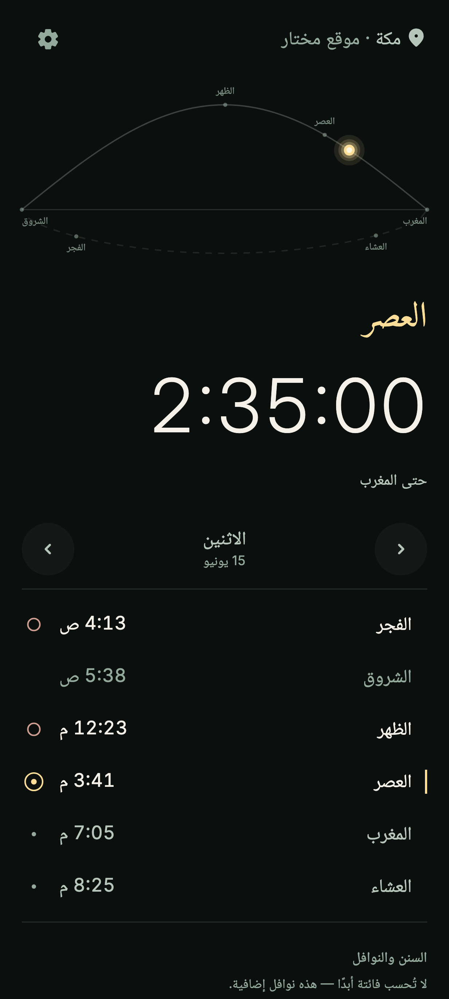
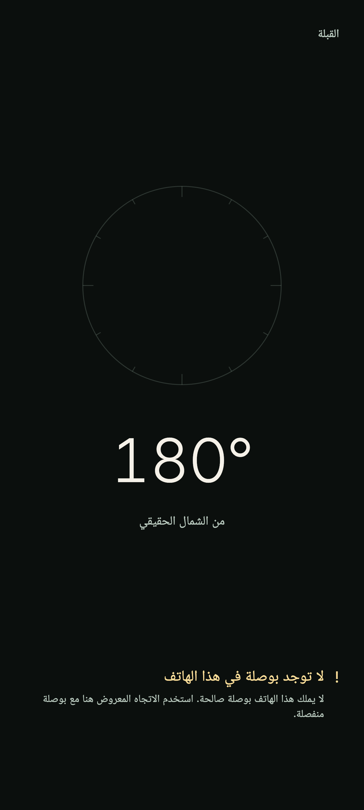
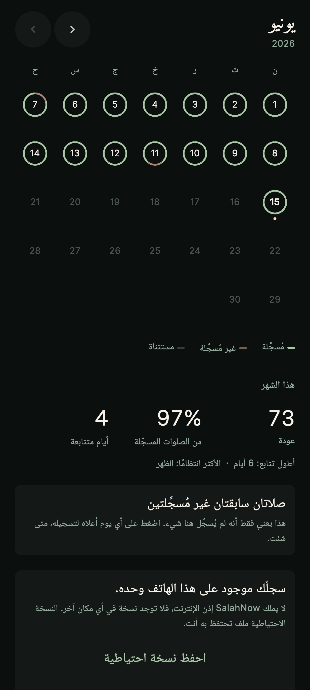
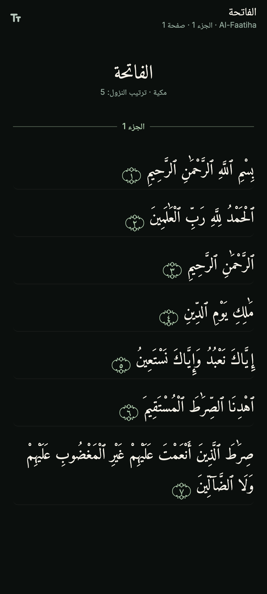

أوقات الصلاة
اثنتا عشرة طريقة حساب، وقولا العصر كلاهما، والشروق — لتعرف متى ينتهي وقت الفجر. تُحسب على هاتفك، وتُعدَّل دقيقة بدقيقة لتوافق مسجدك، وتظهر على شاشتك الرئيسية في أداة بعدّ تنازلي مباشر.
رفيق هادئ وخاص لصلواتك الخمس.
اعرف في هدوء أين أنت من يومك، واستقبل القبلة بثقة، واحتفظ بسجلٍّ خاص بك وحدك — بلا حسابات ولا إعلانات ولا تتبّع ولا ضجيج.
حمّله من Google Playلماذا وُجد
الصلاة لحظة تنصرف فيها عن الضجيج. وكثير من التطبيقات التي بُنيت حولها ازدحمت مع الوقت — حسابات أكثر، وتنبيهات أكثر، وأشياء أكثر تجري في الخلفية بلا أن تراها.
وُضع Salah Now لسبب معاكس. يفعل أشياء قليلة بعناية — أوقات دقيقة، وقبلة صادقة، والقرآن بالعربية، وتذكيرات لطيفة، وسجلّ خاص محفوظ لك وحدك — ثم يتنحّى. الهدوء هو المقصود.
الآن
افتح التطبيق فتجد الصلاة الحالية أمامك ببساطة — اسمها، وكم مضى عليها، وما التالي بعدها. ويستقرّ قوس اليوم فوقها، هادئًا غير متعجّل.
لا إعداد ولا ضجيج. الوقت، والصلاة، ومتّسع للتنفّس.

القبلة
تُرسم القبلة من موقع محقَّق، ويخبرك التطبيق بوضوح متى تكون القراءة ثابتة. يبقى صادقًا بشأن الدقة، ولا يخمّن أبدًا.
البوصلة موثوقة — أمسك الهاتف مستويًا وأدِره حتى يشير السهم إلى الأعلى تمامًا.

التأمّل
سجّل صلواتك لنفسك، وانظر برفق إلى الأسابيع والشهور الماضية. لا شيء هنا مُحوَّل إلى لعبة ولا مُشارَك — إنه سجلّ خاص، محفوظ لك وحدك.
نظرة هادئة إلى الوراء — لا شيء يُشارَك، ولا شيء يُرتَّب، ولا شيء يُقاس بأحد.

القرآن
114 سورة و6,236 آية، على هاتفك — بلا تنزيل ولا اتصال ولا حساب تدخل إليه. أربعة خطوط للقراءة، وموضعك محفوظ لك، وكل آية معلَّمة بالوردة الحقيقية.
نسخة تنزيل بالرسم العثماني، محقَّقة حرفًا حرفًا مقابل مصدرها المنشور.

التذكيرات
تصل التذكيرات في هدوء عند دخول وقت الصلاة، ثم تدعك وشأنك. لا لوم ولا ضغط ولا تتابع تخشى قطعه — مجرد تنبيه لطيف تضبطه كما يناسبك.
اثنتا عشرة طريقة حساب، وقولا العصر كلاهما، والشروق — لتعرف متى ينتهي وقت الفجر. تُحسب على هاتفك، وتُعدَّل دقيقة بدقيقة لتوافق مسجدك، وتظهر على شاشتك الرئيسية في أداة بعدّ تنازلي مباشر.
قبل الصلاة، وعند دخول وقتها، وقبل انتهاء الفجر بالشروق — بصوت أو باهتزاز فقط، وأنت تختار أي الصلوات. وتذكير يومي بالقرآن بعد المغرب إن شئت. بصوت التنبيه في هاتفك أنت، لا بصوت اخترناه لك.
اتجاه مأخوذ من موقع محقَّق، مصحَّح للانحراف المغناطيسي — ولا يشير إلا حين تكون القراءة موثوقة.
ما لا يفعله
صُمِّم Salah Now ليعين على الصلاة، لا لينافس على انتباهك.
لا تسجيل ولا اشتراك. افتح التطبيق واستخدمه.
لا إعلانات ولا عروض ولا محتوى مموَّل.
لا تحليلات تراقب نشاطك الديني.
لا لوحات ترتيب ولا خلاصات ولا مشاركة — تأمّلك خاص بك، ولا يُقارَن بأحد أبدًا.
الخصوصية
لا يملك Salah Now إذنًا بالوصول إلى الإنترنت أصلًا. لا مقيَّدًا ولا مطفأً — الإذن ببساطة غير موجود في التطبيق، فلا يستطيع شيء مما تسجّله أن يغادر هاتفك. ولست مضطرًا إلى تصديق ذلك: يعرض أندرويد أذونات كل تطبيق في صفحته على Play قبل أن تثبّته.
صُنع بعناية
Salah Now رفيق بسيط يُعتمد عليه للصلاة اليومية. مجاني، بلا إعلانات وبلا مشتريات — ويبقى كذلك. لا أكثر، ولا أقل.